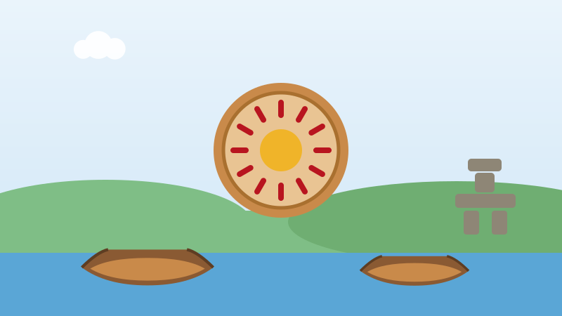

🪶 Pour les enfants
Les premiers peuples de cette terre, hier et aujourd'hui
Des gens vivaient ici, dans chaque région de cette terre, des milliers d'années avant que quiconque traverse l'océan. Leurs familles sont toujours là.

Peuples autochtones est le mot qui désigne les peuples qui étaient ici les premiers. Au Canada, il y a trois groupes : les Premières Nations, les Inuit et les Métis.
Les Premières Nations vivent partout au pays. Il y a aujourd'hui 634 Premières Nations, et elles ne sont pas toutes pareilles : territoires différents, gouvernements différents, histoires différentes, langues différentes.
Les Inuit vivent dans le Grand Nord, au Nunavut, dans le nord du Québec, au Labrador et dans les Territoires du Nord-Ouest. Une seule personne se dit un Inuk. Ils habitent l'Arctique depuis des milliers d'années et le connaissent mieux que quiconque.
Les Métis forment un peuple distinct, né à la fois de familles des Premières Nations et de familles européennes, surtout dans les Prairies, avec leur propre langue, leur propre musique et leur propre drapeau.
Plus de 70 langues autochtones sont parlées au Canada en ce moment. Certaines sont parlées par plusieurs milliers de personnes. D'autres ne le sont que par quelques aînés, et des enfants les réapprennent à l'école.
L'histoire n'est pas toujours heureuse. Pendant plus de cent ans, des enfants autochtones ont été enlevés à leur famille et envoyés dans des pensionnats, où on les punissait de parler leur langue. Beaucoup ne sont jamais rentrés.
Chaque année, le 30 septembre, le Canada souligne la Journée nationale de la vérité et de la réconciliation. Les gens portent un chandail orange pour se souvenir de ces enfants et pour promettre de faire mieux.
Plus de 1,8 million de personnes au Canada sont des Premières Nations, des Inuit ou des Métis. Ce sont vos camarades de classe, vos enseignants, vos médecins et vos voisins. Ce n'est pas seulement une histoire d'autrefois.
Essaie maintenant trois questions
Pas de chronomètre et aucune note à craindre. Chaque réponse t'explique pourquoi.
← Toutes les histoires pour enfants
À propos de ce quiz
Cette page présente les Premières Nations, les Inuit et les Métis du Canada au présent : combien il y a de nations, combien de langues sont parlées aujourd'hui, et pourquoi le 30 septembre est important.
Elle est écrite en phrases courtes pour les enfants de six à neuf ans, avec une image dessinée pour ce site et trois questions à la fin. Touchez le bouton de lecture à voix haute et la page lira les questions à haute voix.
À découvrir aussi
D'autres histoires vraies du Canada pour les enfants